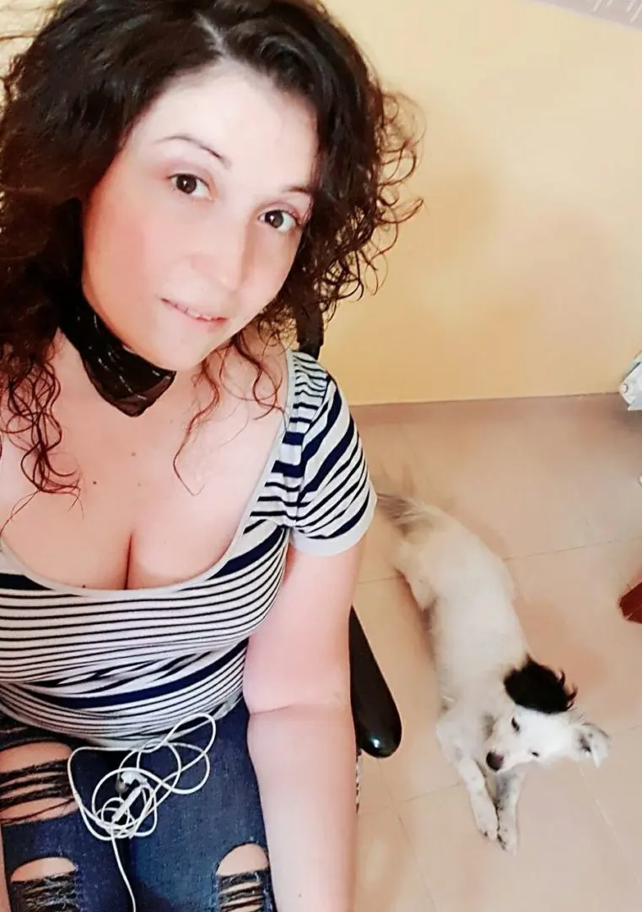
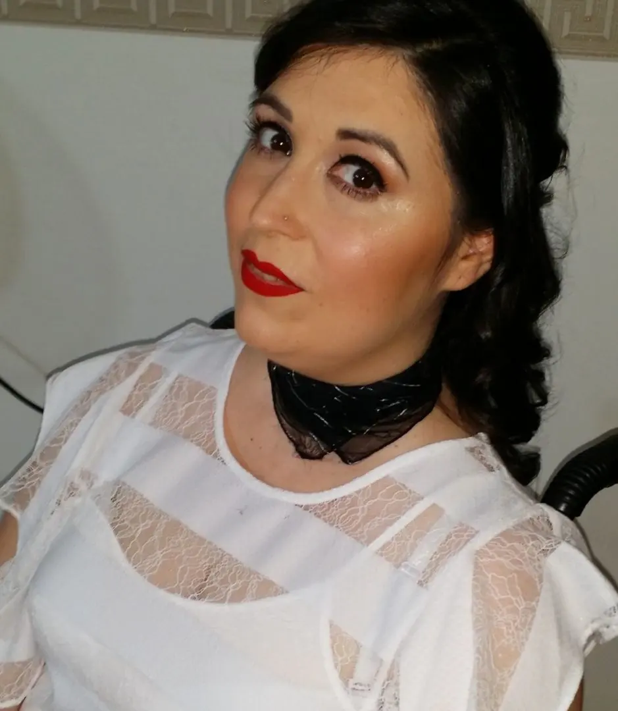
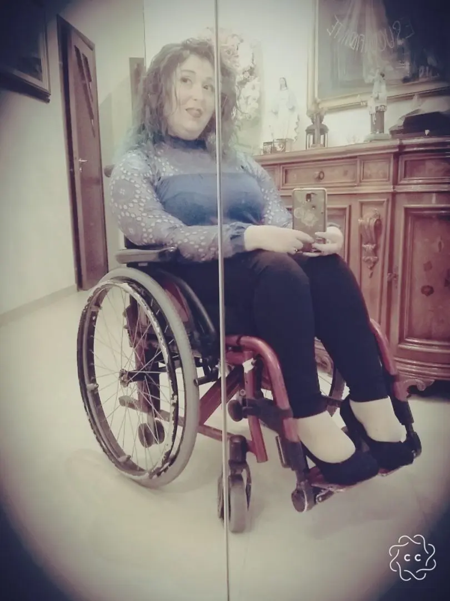

La mia quarantena..restiamo a casa, per noi e per gli altri!

Di tutta questa situazione della quarantena in casa forzata, indetta dal Governo dopo il decreto di 2 giorni fa (10/03/2020), mi fa strano e mi fa davvero tanta tristezza vedere che gli influencer, gli spot pubblicitari, gli attori, cantanti e tanti altri stanno lanciando continuamente messaggi di sensibilizzazione per restare in casa.
Quasi a voler convincere la gente come i bambini quando non vogliono mangiare. Io non capisco perché l'italiano medio è così.
La cosa che mi fa ridere è che la gente si è sempre lamentata dello stress generale, della vita che scorre in un battibaleno senza dare il tempo di guardarsi intorno. Che è sempre una continua lotta con i giorni che sembrano sempre troppo corti per stare insieme ai figli, parenti.
E adesso che ci hanno chiesto di restare a casa, sul divano a guardare un film, a giocare con i bambini e a perdere tempo in qualsiasi altro modo, non ci sta bene!

Ci sentiamo come se dovessimo scontare una condanna a morte. Cioè ragazzi, ci hanno detto di stare fermi non di arruolarci per una guerra.
Sono Manilla e sono una ragazza disabile di Napoli, normalmente, soffrendo di problemi respiratori, durante l'inverno, faccio periodi in casa.
Di conseguenza, essendo il Covid19 una malattia immunitaria, personalmente, già mi sono messa in una sorta di quarantena molti giorni prima.
In genere, se mi ammalo anche solo di un semplice raffreddore, sono soggetta a crisi respiratorie, ossigeno e secrezioni. È una prassi che io vivo da ormai 16 anni.

L'inverno per me è un testa e croce per uscire. È un continuo stare attenta ad ogni spiffero un po' più ventilato.
Sono dunque abituata a periodi medio-lunghi in casa. Di conseguenza, informandomi un po' sullo stato del virus e sulla sua pericolosità, non ho voluto rischiare cercando di mettermi quanto più possibile, 'sotto coperta'.
Certo, la paura incombe, il semplice fatto di restare in casa può portare a pensare, o magari anche solo il tragitto da casa e lavoro, o/e supermercato può essere una minaccia. Ma credo che cercare sempre di infrangere regole di quarantena, come il NON RESTARE IN CASA e uscire con una scusa qualsiasi 'no, ma devo fare solo...', non è maturità, non è rispettoso né per noi e né nei confronti del prossimo.
Anch'io mi sento come in una guerra senza armi, come in uno di quei film che vediamo in TV, tutto sembra ingiusto, tutto sembra impossibile ma l'unica cosa che possiamo e dovremmo fare adesso è aspettare in casa. Informiamoci su ogni passo del governo e sul virus stesso.
Dobbiamo sapere quante più informazioni per restare anche lucidi. E nel frattempo cercare di passare il nostro tempo, con i familiari, lavorando, per chi può farlo in casa, giocando, riposando, leggendo.
Un po' come ho vissuto i miei 34 anni. Restando informata sul mio stato di salute, accettando l'evolversi la mia patologia negli anni ma nonostante tutto vivere. Vivere con serenità e senza ansia, perché l'ansia non porta a nulla, la negatività non porta giovamento alla mente e al fisico e di conseguenza agli altri intorno a noi.Se davvero amiamo noi e i nostri cari, restiamo a casa ma con il sorriso e non con il muso lungo.

Dobbiamo solo sperare in una cura a questo mostro che ha colpito tutti in pieno, chi è contagiato e chi non. In fondo, anche moralmente siamo stati tutti colpiti. Resteremo comunque segnati da questa pandemia. questa è la verità!